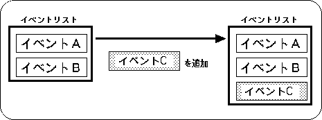
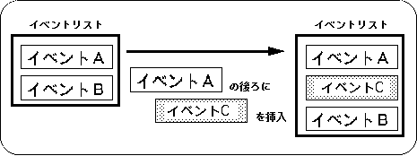
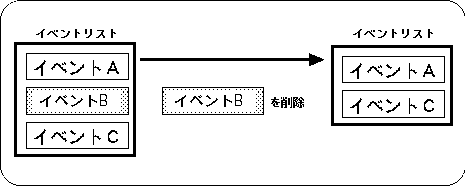
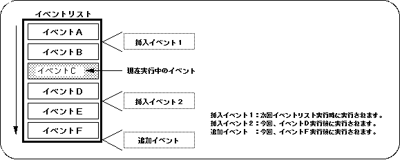

Return to previous page | Return to menu | Go to next page
10-3. Changing the event list
Events can be added to events registered in the event list.
To add an event, use the same library function “slSetEvent” used for event registration.
Figure 10-8 Add event

- [EVENT * slSetEvent (void (* func) ());]
- Reserves an EVENT structure (128 bytes) in the event RAM area, and adds and registers new events at the end of the event list. For the parameter, substitute the execution address value of the event to be registered.
The function “slSetEvent” returns the start address of the registered EVENT structure as a return value.
If event registration fails, NULL is returned.
Events can be inserted into events registered in the event list.
The event is inserted after the specified event.
To insert an event, use the library function “slSetEventNext”.
Figure 10-9 Insert event

- [EVENT * slSetEventNext (EVENT * evptr, void (* func) ());]
- Reserves an EVENT structure (128 bytes) in the event RAM area, and inserts / registers a new event in the middle of the event list. For the parameter, substitute the start address of the EVENT structure immediately before the event is inserted and the execution address of the event to be inserted / registered.
The function “slSetEventNext” returns the start address of the registered EVENT structure as a return value.
If event registration fails, NULL is returned.
Events registered in the event list can be deleted from the event list.
To delete an event, use the library function “slCloseEvent”.
Figure 10-10 Delete event

- [void slCloseEvent (EVENT * evptr);]
Deletes the event specified by the
- parameter from the event list.
At the same time, if the member “work” of the specified event is not NULL, all attached works are returned to the system as if there is a work list.
For the parameter, assign the start address of the EVENT structure to be deleted.
The function “slCloseEvent” does not check whether the area to be returned is an EVENT structure registered. For this reason, even if the extended user area is returned to the system by mistake, it will not be understood.
In this case, various problems may occur, and the CPU may stop in the worst case (refer to “10-5: Notes on event processing” for details).
If you try to change the event list in any way while executing the event list that has been registered (for example, changing the event list in the event), the changed event will be affected as shown in the following figure.
Figure 10-11 Changing the event list during event execution

Changes to the (executed) event list prior to the currently running event are applied the next time the event list is executed.
Changes to the event list that is currently executed (after not being executed) are executed according to the order of the event list that was changed during the current event execution.
Any changes to the addition / insertion / deletion of events will be performed under this application.
Return to previous page | Return to menu | Go to next page